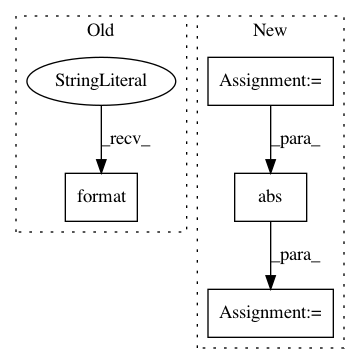

2381a50a70559340a0335288d648b4bb9a675588,slm_lab/agent/algorithm/actor_critic.py,ActorCritic,train_separate,#ActorCritic#,247
Before Change
critic_loss = self.train_critic(batch)
actor_loss = self.train_actor(batch)
total_loss = critic_loss + abs(actor_loss)
logger.debug("Losses: Critic: {:.2f}, Actor: {:.2f}, Total: {:.2f}".format(
critic_loss, abs(actor_loss), total_loss
))
return total_loss.item()
else:
return np.nan
After Change
advs, v_targets = self.calc_advs_v_targets(batch)
policy_loss = self.train_actor(advs)
val_loss = self.train_critic(batch)
loss = val_loss + abs(policy_loss)
// reset
self.to_train = 0
self.body.entropies = []
self.body.log_probs = []
logger.debug(f"Total loss: {loss:.2f}")
self.last_loss = loss.item()
return self.last_loss
def train_actor(self, advs):
"""Trains the actor when the actor and critic are separate networks"""
In pattern: SUPERPATTERN
Frequency: 3
Non-data size: 4
Instances
Project Name: kengz/SLM-Lab
Commit Name: 2381a50a70559340a0335288d648b4bb9a675588
Time: 2018-06-12
Author: kengzwl@gmail.com
File Name: slm_lab/agent/algorithm/actor_critic.py
Class Name: ActorCritic
Method Name: train_separate
Project Name: librosa/librosa
Commit Name: ed4b036702f46a57002b1fa946af84a9c822503e
Time: 2016-10-03
Author: brian.mcfee@nyu.edu
File Name: librosa/filters.py
Class Name:
Method Name: window_bandwidth
Project Name: prody/ProDy
Commit Name: c0c0e9e18e2538d0a9d14260a2e36031e1122d2c
Time: 2012-10-20
Author: lordnapi@gmail.com
File Name: lib/prody/proteins/pdbclusters.py
Class Name:
Method Name: listPDBCluster